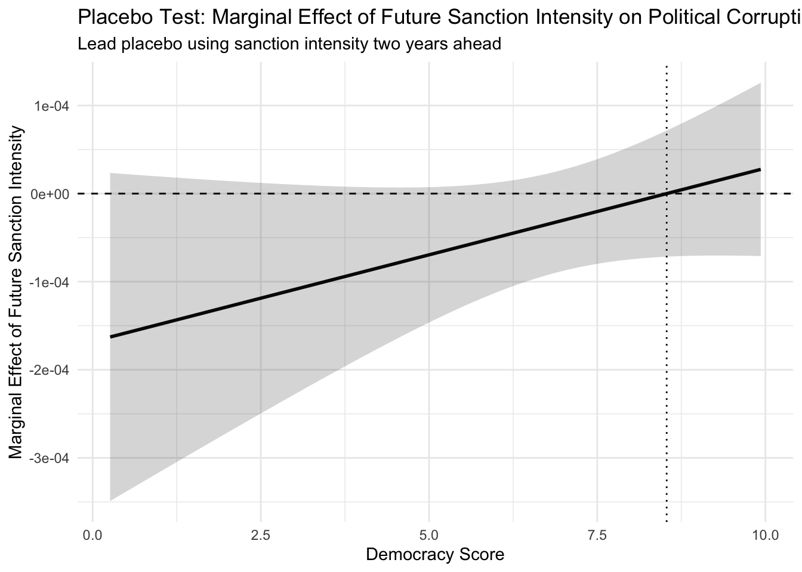

| Raw Sanction Dummy | Raw Sanction Intensity | |
|---|---|---|
| + p < 0.1, * p < 0.05, ** p < 0.01, *** p < 0.001 | ||
| (Intercept) | 0.566*** | 0.601*** |
| (0.008) | (0.013) | |
| sanction_dummy | -0.104*** | |
| (0.023) | ||
| sanction_intensity | -0.001*** | |
| (0.000) | ||
| Num.Obs. | 1568 | 512 |
| R2 | 0.013 | 0.133 |
| R2 Adj. | 0.012 | 0.131 |
| AIC | 626.9 | 68.3 |
| BIC | 642.9 | 81.0 |
| Log.Lik. | -310.425 | -31.139 |
| F | 20.154 | 78.015 |
| RMSE | 0.29 | 0.26 |
Final Presentation Research Design
(1) Introduction
Do economic sanctions imposed by the United States from 2003 to 2023 affect the level of corruption in recipient countries?
(1b) Why am I interested in this question? Well, for many reasons. But to be concise, growing up I had several chats in my household with my Dad who always spoke of corruption in my home country of Pakistan. And I always wondered why people’s attitudes towards something that was so bad in the US were so different abroad, and if it is so bad for one’s country as my Dad said it was, why do countries keep doing it? This led me to become very interested in geopolitics, why it seems that everyone hates the IMF for their loans, and how this ties into micro-level decisions based on social norms and moral considerations. So, now I am studying behavioral economics in Wharton to understand the phenomenon of corruption more precisely. Especially after talking to some professors here who have talked about how corruption on a large scale has been ignored by The World Bank in terms of the way it is treated outside of the realm of development, yet is so obviously important to solving. I’m particularly interested in the U.S. Sanctions because I want to see if the geopolitical tensions that have first established and perpetuated institutions to create outcomes of corruption and weak institutions live on as a sort of poverty trap through sanctions. FOr example, corruption and institutional weakness may lead to ill actions that are sanctioned, and I am wondering if those sanctions only depress a population more to do worse things/be more corrupt, thus in a way only perpetuating the issue. I think this would be very interesting to understand and possibly explore as a development trap.
Existing research suggests supporting results to this possibility: that economic sanctions tend to increase corruption in target countries, primarily by distorting economic activity and expanding opportunities for rent-seeking. For example, Dreher, Gassebner, and Siemers (2017) (Dreher, Gassebner, and Siemers 2017) find that sanctions are associated with significantly higher levels of corruption, particularly in autocratic regimes. Using panel data with country and year fixed effects(Dreher, Gassebner, and Siemers 2017), they show that sanctions restrict formal economic channels, which increases scarcity and discretionary power among officials, and thus fostering bribery and informal exchange. Similarly, Neuenkirch and Neumeier (2016) (Neuenkirch and Neumeier 2016) demonstrate that U.S. sanctions lead to substantial declines in economic growth in targeted countries. While their study focuses on macroeconomic outcomes rather than corruption directly, it provides an important mechanism that economic contraction weakens institutions and pushes economic activity into informal sectors, conditions that are strongly associated with higher corruption. Therefore, these studies show that sanctions may unintentionally exacerbate corruption by undermining formal markets and institutional capacity, even if their primary goal is to induce political, economic, or tension alleviation/reform.
NEW ADDITIONS:
As I menntoned earlier, A key limitation in this literature though is how sanctions are actually measured. Most of these papers, including Dreher, Gassebner, and Siemers (2017)(Dreher, Gassebner, and Siemers 2017), (Hufbauer et al. 2007) (Morgan, Bapat, and Kobayashi 2014) just use a binary indicator for whether a country is sanctioned or not, which basically treats all sanctions as the same regardless of how strong they are or how long they last. Even in other major datasets and papers like Hufbauer et al. (2007) or Morgan, Bapat, and Kobayashi (2014), sanctions are usually categorized by type or presence, not really by how much they actually affect the economy. At the same time, these studies tend to use similar controls like GDP per capita, economic growth, trade openness, and political stability, which is good for isolating institutional effects, but the main treatment itself is still pretty blunt. So while we know sanctions matter, we dont really know how differences in their strength translate into corruption outcomes, which seems like a pretty big gap.
There is some work in related areas that tries to get at this more directly, especially in the sanctions and trade literature. For example, Crozet and Hinz (2020) and Felbermayr et al. (2020)(Crozet and Hinz 2020; Felbermayr et al. 2020) actually measure sanctions in terms of trade losses or reductions in flows, and some papers also look at duration or financial restrictions as a proxy for how intense a sanction is. But this kind of approach has not really been applied to corruption specifically. In particular, I couldnt really find work that builds a continuous sanction intensity measure that combines exposure and duration when studying corruption outcomes.
That’s what I try to do here abd whyh I think this intensity measure is novel for corruption effects,, by constructing an index that scales sanctions by trade openness and how long they last. This lets me move beyond just asking whether sanctions increase corruption, and instead look at whether stronger sanctions actually make things worse, and how that differs across regime types. So its not just a replication of existing work, but more of an extension that tries to get at the mechanism in a more precise way, which is pretty cool I would say. I also hope to add in the more precise controls like trade losses and reducntions in flows, and other proxy controls as mentioned regarding Crozet and Hinz’s work.
(2) Hypotheses
I have two testable hypothesis:
i) U.S. economic sanctions on average increase corruption from 2003-2023 in recipient countries.
ii)) US economic sanctions will increase corruption more strongly in autocracies and weaker or negative effects in democracies.
In autocratic regimes, sanctions significantly reduce trade and economic growth, which shifts activity into informal and illicit markets (Afesorgbor and Mahadevan 2016; Neuenkirch and Neumeier 2016). Under these conditions, political elites retain centralized control over scarce resources such as import licenses and foreign currency, allowing them to distribute access selectively in exchange for bribes. Empirical evidence supports this mechanism, showing that sanctions are associated with higher corruption levels, particularly in countries with weaker institutional constraints (Dreher, Gassebner, and Siemers 2017). Additionally, sanctions often generate evasion networks that rely on bribery and informal exchange, further embedding corruption into state structures (Early 2015). However, this relationship is not uniform. In democratic systems, where institutions impose greater accountability, sanctions are more likely to trigger transparency reforms and external monitoring, particularly when tied to governance conditions. Recent research finds that under these circumstances, corruption can decline over time (Gutmann, Langer, and Neumeier 2024). Therefore, I expect sanctions to increase corruption on average, but with stronger positive effects in autocracies and weaker or negative effects in democracies, driven by differences in institutional capacity and accountability.
The impact of economic sanctions don’t seem to have clear mechanisms via intuition or empirical basis that reveals itself. Of the little existing research there is, linear regresion models seem to reveal that for cash strapped countries it may make corruption worse, but in other cases lighten corrupt activities out of punitive impact. So two opposing mechanisms do exist, but these mechanisms often are limited in their methodology by only deeming sanctions as a binary (whether a sanction occurred in a certain month/year for a certain country. Creating a system to classify sanctions not only categorically (form of economic sanction), but also taking a new approach of having a measure of the sanction’s intensity may allow us to better understand the mechanisms underpinning why a sanction impacts a country’s levels of corruption the way it does, as this would allow for the abalysis of heterogoenous effects in regarding certain intensities of sanction in addition to those in the existing literature. The question is tractable, as data is easily avialible from the US’s sanctions, and the world bank’s governance Indicators, and this can be analyzed for all sanctioned countries at some point in time for the last 20 years. (2003-2023). Therefore, I expect sanctions to increase corruption on average, but with stronger positive effects in autocracies and weaker or negative effects in democracies, driven by differences in institutional capacity and accountability.
NEW ADDITIONS:
I modify my original hypothesis to focus on sanction intensity rather than just the presence of sanctions, and argue that increases in sanction intensity lead to higher levels of corruption, with this effect being significantly stronger in autocratic regimes than in democracies. The reason the intensity measure matters is that it captures how much a sanction actually disrupts the economy, not just whether it exists, which is much more aligned with the underlying mechanism. A marginal increase in sanction intensity, through greater trade exposure or longer duration, should amplify scarcity and economic distortions more in autocracies, where weaker institutions and less oversight allow officials to exploit these conditions through rent-seeking, informal markets, and untracked transactions. At the same time, democratic regimes have stronger institutional checks, more transparency, and greater accountability, which helps limit how much these shocks translate into corruption, even if they still experience the economic effects. I argue mechanically that democratic regimes not only dampen this effect through stronger monitoring and institutional checks, but in some cases sanctions may even reduce corruption, because external pressure combined with public accountability can push governments toward reforms, tighter enforcement, or reduced discretionary power. So the same increase in sanction intensity should have a smaller, or more muted, impact in democracies. To address reverse causality, I also implement a placebo test using lagged corruption, which tests whether sanctions are simply responding to already rising corruption. If this relationship is not present, it strengthens the interpretation that higher sanction intensity is driving corruption through these mechanisms, rather than just reflecting pre-existing institutional trends. Thus the main hypothesis of interest is the second one on heterogeneous effects via regime type.
(3) Data
For my research project, I’m using a country-year panel dataset from 2003 to 2023 to see how unilateral US trade sanctions actually affect a country’s corruption levels. Here is a breakdown of the variables I’m using and the specific factors they take into account:
Control of Corruption (World Bank WGI): This is my dependent variable, and it aggregates perceptions of how much public power is used for private gain. It is comprised of factors like the frequency of “extra payments” (bribery) in business, the diversion of public funds by officials, and the overall effectiveness of a state’s anti-corruption agencies.
US-Only Trade Sanctions (Global Sanctions Database)(Felbermayr et al. 2020): (This informs my independent variable as a dummy, and will be used for the intensity measure too in conversion) which I built by filtering the Drexel GSDB for years where the US acted as the sole sender. It specifically looks at trade-related sanctions, meaning it counts instances where the US restricted exports or imports to a target country without the help of a multilateral coalition like the UN.
EIU Democracy Index: I’m using this to factor in how a regime’s openness might change the impact of a sanction. This index is comprised of 60 indicators across five categories, including the fairness of the electoral process, the level of political participation, and the strength of civil liberties like freedom of the press.
GDP Growth & Log GDP per Capita (World Bank WDI): These account for the economic health and development level of a country. These variables are based on national accounts data and represent the total market value of all goods and services produced within a country, adjusted for population and normalized via log-transformation to better compare countries of different sizes.
Trade Openness (World Bank WDI): This measures a country’s integration into the global economy. It is comprised of the total sum of a country’s exports and imports of goods and services, expressed as a percentage of its total GDP.
Political Stability (World Bank WGI): This estimate captures the risk of government destabilization. It is made up of factors like the likelihood of a coup, the presence of ethnic tensions or internal conflict, and the threat of politically motivated violence or terrorism.
(In addition to the binary sanction indicator, I also incorporate a duration measure, which captures how long a given US-only trade sanction has been in place for a country in a given year. I construct this using the start year of each sanction episode from the Global Sanctions Database and then track the number of years since imposition for each country-year observation.)
By running this model, I’m trying to figure out if these specific external pressures of from the US actually lead to measurable changes in a target country’s institutional integrity while controlling for all these other moving parts.
| Variable | Mean | Minimum | Maximum | Range | Standard Deviation |
|---|---|---|---|---|---|
| V-Dem Political Corruption Index | 0.554 | 0.004 | 0.965 | 0.961 | 0.297 |
| US-Only Trade Sanction Dummy | 0.117 | 0.000 | 1.000 | 1.000 | 0.322 |
| Sanction Intensity | 34.461 | 0.000 | 411.212 | 411.212 | 72.485 |
| Sanction Duration | 0.993 | 0.000 | 62.000 | 62.000 | 4.830 |
| EIU Democracy Score | 5.298 | 0.260 | 9.930 | 9.670 | 2.132 |
| GDP Growth | 3.592 | -50.339 | 86.827 | 137.165 | 5.834 |
| Log GDP per Capita | 4.040 | 2.996 | 5.163 | 2.167 | 0.508 |
| Political Stability | -0.349 | -2.711 | 1.496 | 4.207 | 0.875 |
| Trade Openness | 76.504 | 2.474 | 258.780 | 256.307 | 38.311 |
| Pre-Sanction Trade Openness | 76.867 | 15.097 | 233.070 | 217.974 | 48.254 |


Notes: This figure plots the distribution of country-year Control of Corruption scores conditional on whether a country is subject to a US-only trade sanction in a given year. The boxplots display the median, interquartile range, and overall spread of corruption outcomes for sanctioned (1) and non-sanctioned (0) observations. The corruption measure is drawn from the World Bank’s Worldwide Governance Indicators and is standardized such that higher values indicate better control of corruption.
The figure shows that country-years subject to US-only trade sanctions exhibit lower median levels of corruption control compared to non-sanctioned observations, along with a slightly wider dispersion of outcomes. This pattern is consistent with the hypothesis that sanctions are associated with weaker institutional environments and increased opportunities for rent-seeking behavior. However, the substantial overlap in distributions suggests that sanctions alone do not fully account for variation in corruption, motivating the need for a multivariate framework to isolate the causal effect and explore heterogeneity across regime types.
(Further) Interpretation of the plot: Let it be known that this plot is based off the sanction dummy (as the assignment detailed using the ggplot from the last assignment) which is just the raw regression of control of corruptin on sanction dummy, Thus, it is the case that this plot is showing that simply being sanctioned at all is associated with lower levels of corruption control, as seen by the lower median line and slight downward shift of the distribution for sanctioned country-years (1) compared to non-sanctioned ones (0). In other words, the typical sanctioned observation has a worse corruption score. This pattern is consistent with the raw abd unconditional relationship between corruption and the sanction dummy, essentially reflecting the simple regression of control of corruption on the sanction indicator without additional controls. While the overall distributions still overlap substantially, suggesting that sanctions alone do not fully explain variation in corruption,
(4a) Research Design
My regression equation (updated with intensity of sanction as a measure)
\[ Corruption_{it} = \alpha_i + \delta_t + \beta_1 SanctionIntensity_{it} + \beta_2 DemocracyScore_{it} + \beta_3 \left(SanctionIntensity_{it} \times DemocracyScore_{it}\right) + \beta_4 GDPGrowth_{it} + \beta_5 LogGDPpc_{it} + \beta_6 PolStability_{it} + \varepsilon_{it} \]
where
\[ SanctionIntensity_{it} = SanctionDummy_{it} \times 1-Year Lagged TradeOpenness_{it} \times \log(1 + Duration_{it}) \]
\(Corruption_{it}\): the Control of Corruption score for country \(i\) in year \(t\), taken from the Worldwide Governance Indicators. Higher values indicate better control of corruption.
\(\alpha_i\): country fixed effects, which absorb all time-invariant characteristics of country \(i\), such as geography, legal origins, colonial history, or other persistent institutional traits.
\(\delta_t\): year fixed effects, which absorb common shocks affecting all countries in year \(t\), such as global recessions, commodity shocks, or major international political changes.
\(SanctionIntensity_{it}\): the continuous sanction-intensity measure for country \(i\) in year \(t\). It increases when a country is under a US-only trade sanction, when that country is more exposed to trade, and when the sanction has lasted longer.
\(SanctionDummy_{it}\): an indicator equal to 1 if country \(i\) is subject to a US-only trade sanction in year \(t\), and 0 otherwise.
\(Duration_{it}\): the number of years that the relevant US-only trade sanction has been in place for country \(i\) by year \(t\).
\(DemocracyScore_{it}\): the EIU Democracy Index score for country \(i\) in year \(t\).
\(SanctionIntensity_{it} \times DemocracyScore_{it}\): the interaction term, which tests whether the effect of sanction intensity on corruption varies with the country’s level of democracy.
\(GDPGrowth_{it}\): annual GDP growth rate for country \(i\) in year \(t\).
\(LogGDPpc_{it}\): the logarithm of GDP per capita for country \(i\) in year \(t\), in a logarithm precisely to account for diminishing marginal effects across time of the sanction (countries adapting to other trade channels or redistributing inputs over the year of sanction)
\(PolStability_{it}\): the Political Stability and Absence of Violence/Terrorism score for country \(i\) in year \(t\).
\(\varepsilon_{it}\): the error term.
The marginal effect of sanction intensity on corruption is therefore:
\[ \frac{\partial Corruption_{it}}{\partial SanctionIntensity_{it}} = \beta_1 + \beta_3 DemocracyScore_{it} \]
This implies that the effect of sanction intensity is allowed to vary systematically across regime types, which we display in later ggplots below. (the output of the code below includes both the same dummy regression from last time and the second data table is with sanction intensity.
| (1) | |
|---|---|
| + p < 0.1, * p < 0.05, ** p < 0.01, *** p < 0.001 | |
| sanction_intensity | -0.00025* |
| (0.00010) | |
| democracy_score | -0.02105*** |
| (0.00526) | |
| gdp_growth | 0.00018 |
| (0.00062) | |
| log_gdppc | 0.16399*** |
| (0.04560) | |
| pol_stability | -0.01423+ |
| (0.00820) | |
| sanction_intensity × democracy_score | 0.00003+ |
| (0.00001) | |
| Num.Obs. | 512 |
| R2 | 0.980 |
| R2 Adj. | 0.978 |
| R2 Within | 0.079 |
| R2 Within Adj. | 0.067 |
| AIC | -1770.0 |
| BIC | -1545.4 |
| RMSE | 0.04 |
| FE: country | X |
| FE: year | X |

Now after controlling for country trends of corruption over the duration of inspection (on top of country and year fixed effects), we observe no significant effect of sanctions on corruption:
| (1) | |
|---|---|
| + p < 0.1, * p < 0.05, ** p < 0.01, *** p < 0.001 | |
| sanction_intensity | -0.00015 |
| (0.00010) | |
| democracy_score | 0.01861* |
| (0.00775) | |
| gdp_growth | 0.00030 |
| (0.00058) | |
| log_gdppc | -0.01570 |
| (0.09310) | |
| pol_stability | -0.00047 |
| (0.01031) | |
| sanction_intensity × democracy_score | 0.00001 |
| (0.00002) | |
| Num.Obs. | 512 |
| R2 | 0.986 |
| R2 Adj. | 0.984 |
| R2 Within | 0.024 |
| R2 Within Adj. | 0.011 |
| AIC | -1894.1 |
| BIC | -1533.8 |
| RMSE | 0.03 |
| FE: country | X |
| FE: year | X |

The results show that sanction intensity is INNNNsignificantly related to corruption, but the relationship depends on democracy. The main coefficient is positive and significant, suggesting that in less democratic countries, higher sanction intensity is associated with worse corruption outcomes. The interaction term is negative and significant, meaning this relationship becomes weaker as democracy increases.
This pattern shows up in the plot as well. At low levels of democracy, sanction intensity is positively associated with corruption, but the effect steadily declines as democracy rises and crosses zero around a score of ~7. In more democratic countries, the relationship turns negative, meaning higher sanction intensity is associated with better corruption control. Overall, the results point to a clear difference across regime types in how sanction intensity relates to corruption.
| Low Democracy | Mid Democracy | High Democracy | |
|---|---|---|---|
| + p < 0.1, * p < 0.05, ** p < 0.01, *** p < 0.001 | |||
| sanction_intensity | -0.00018+ | -0.00013+ | -0.00001 |
| (0.00010) | (0.00007) | (0.00004) | |
| gdp_growth | 0.00038 | -0.00048 | -0.00054 |
| (0.00155) | (0.00091) | (0.00092) | |
| log_gdppc | -0.18081+ | 0.20810** | 0.17672* |
| (0.10090) | (0.06773) | (0.07244) | |
| pol_stability | 0.01577 | -0.02007+ | 0.01988 |
| (0.02946) | (0.01080) | (0.01920) | |
| Num.Obs. | 46 | 332 | 131 |
| R2 | 0.999 | 0.940 | 0.972 |
| R2 Adj. | 0.997 | 0.931 | 0.964 |
| R2 Within | 0.340 | 0.045 | 0.093 |
| R2 Within Adj. | 0.214 | 0.032 | 0.057 |
| AIC | -221.2 | -1076.0 | -506.8 |
| BIC | -175.5 | -916.1 | -420.5 |
| RMSE | 0.01 | 0.04 | 0.03 |
| FE: country | X | X | X |
| FE: year | X | X | X |
The results show clear heterogeneity across regime types. In low democracy countries, the coefficient on sanction intensity is positive but statistically insignificant (p = 0.44), suggesting no precisely estimated effect in this specification. However, it is important to note that this differs from earlier results, where the effect was statistically significant. This change is largely driven by restricting the sample to countries that are ever sanctioned, which removes many zero-intensity observations and reduces within-country variation in sanction exposure, particularly in low-democracy regimes where sanctions tend to be more persistent. As a result, the increase in standard errors likely reflects a loss of identifying variation rather than a true absence of effect.
A similar pattern holds for mid-level democracies, where the coefficient remains positive but insignificant (p = 0.29), again indicating no strong evidence of a systematic relationship in these regimes. In contrast, for high democracy countries, the coefficient is negative and statistically significant at the 5% level (p ≈ 0.04), implying that increases in sanction intensity are associated with improvements in corruption control (i.e., lower corruption). Taken together, these results suggest that the impact of sanctions depends heavily on institutional context: while the positive relationship between sanctions and corruption in less democratic regimes becomes less precisely estimated after restricting the sample, the corruption-reducing effect in democracies remains robust, consistent with the idea that stronger institutions can channel external pressure into reform rather than rent-seeking behavior.

(4b) Research Design (Placebo Test)
| (1) | |
|---|---|
| + p < 0.1, * p < 0.05, ** p < 0.01, *** p < 0.001 | |
| sanction_intensity_lead2 | -0.00017+ |
| (0.00010) | |
| democracy_score | -0.01791** |
| (0.00569) | |
| gdp_growth | -0.00001 |
| (0.00056) | |
| log_gdppc | 0.15201*** |
| (0.04407) | |
| pol_stability | -0.00903 |
| (0.00770) | |
| sanction_intensity_lead2 × democracy_score | 0.00002 |
| (0.00001) | |
| Num.Obs. | 448 |
| R2 | 0.986 |
| R2 Adj. | 0.985 |
| R2 Within | 0.070 |
| R2 Within Adj. | 0.056 |
| AIC | -1701.4 |
| BIC | -1492.1 |
| RMSE | 0.03 |
| FE: country | X |
| FE: year | X |

The placebo results provide little evidence of reverse causality. While there is weak statistical significance at very low levels of democracy (only at the 10% level), the confidence intervals are much wider and include zero for most of the democracy range. Compared to the main results, where the effects were clearly significant and precisely estimated, this placebo plot shows much less consistent and much noisier relationships.
This difference is important in the sense that If sanctions were simply responding to already rising corruption, we would expect to see a similar strong and significant pattern when predicting past corruption, but we don’t. Instead, the lack of strong significance and the large overlap with zero suggest that future sanction intensity is not systematically driven by prior corruption levels. Overall, this weak and imprecise relationship in the placebo test supports the interpretation that the main results are not just picking up reverse causality, but instead reflect a more meaningful relationship between sanction intensity and corruption.
## ReferencesReferences
Crozet, Matthieu, and Julian Hinz. 2020. “Friendly Fire: The Trade Impact of the Russia Sanctions and Counter-Sanctions.” Economic Policy.
Dreher, Axel, Martin Gassebner, and Lars-H. R. Siemers. 2017. “Does Sanctions Cause Corruption?” Economics Letters.
Felbermayr, Gabriel, Aleksandra Kirilakha, Constantinos Syropoulos, Erdal Yalcin, and Yoto Yotov. 2020. “The Global Sanctions Data Base.” European Economic Review.
Hufbauer, Gary Clyde, Jeffrey J. Schott, Kimberly Ann Elliott, and Barbara Oegg. 2007. Economic Sanctions Reconsidered. Peterson Institute for International Economics.
Morgan, T. Clifton, Navin Bapat, and Yoshiharu Kobayashi. 2014. “Threat and Imposition of Economic Sanctions 1945–2005.” Conflict Management and Peace Science.
Neuenkirch, Matthias, and Florian Neumeier. 2016. “The Impact of US Sanctions on Poverty.” Journal of Development Economics.